Next: Parameters
Up: Dynamic Incoherent Structure Factor
Previous: Dynamic Incoherent Structure Factor
Contents
Theory and implementation
Please refer to Section 4.2.5.1 for more details about the theoretical background related to the dynamic
incoherent structure factor. In this analysis, nMOLDYN proceeds in two steps. First, it computes the partial and total
intermediate incoherent scattering function
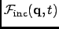 using equation 4.142. Then, the partial
and total dynamic incoherent structure factors are obtained by performing the Fourier Transformation, defined
in Eq.4.134, respectively on the total and partial intermediate incoherent scattering function.
nMOLDYN computes the incoherent intermediate scattering function on a rectangular grid of equidistantly spaced points
along the time-and the q-axis, repectively:
where  is the number of time steps in the coordinate time series,
is the number of time steps in the coordinate time series,  is a user-defined number of q-shells,
is a user-defined number of q-shells,
 is the number of selected species,
is the number of selected species,  the number of atoms of species I,
the number of atoms of species I,
 the weight for specie I (see Section 4.2.1 for more details) and
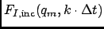 is defined as:
the weight for specie I (see Section 4.2.1 for more details) and
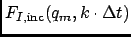 is defined as:
The symbol
in (4.160) denotes an average over q-vectors having
approximately the same modulus
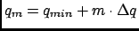. The particle density must not change if jumps in
the particle trajectories due to periodic boundary conditions occcur. In addition the average particle density,
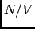, must not change. This can be achieved by choosing q-vectors on a lattice which is reciprocal to the lattice defined
by the MD box. Let
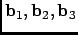 be the basis vectors which span the MD cell. Any position vector in the
MD cell can be written as
with  having values between and . The primes indicate that the coordinates are box coordinates. A jump due
to periodic bounday conditions causes to jump by 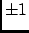. The set of dual basis vectors
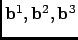
is defined by the relation
having values between and . The primes indicate that the coordinates are box coordinates. A jump due
to periodic bounday conditions causes to jump by 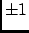. The set of dual basis vectors
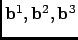
is defined by the relation
If the q-vectors are now chosen as
 |
(4.163) |
where k,l,m are integer numbers, jumps in the particle trajectories produce phase changes of multiples of 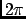 in the
Fourier transformed particle density, i.e. leave it unchanged. One can define a grid of q-shells or a grid of q-vectors
along a given direction or on a given plane, giving in addition a tolerance for q. nMOLDYN looks then for
q-vectors of the form (4.163) whose moduli deviate within the prescribed tolerance from the equidistant q-grid.
From these q-vectors only a maximum number per grid-point (called generically q-shell also in the anisotropic case) is
kept.
The q-vectors can be generated isotropically, anisotropically or along user-defined directions.
The correlation functions defined in 4.160 are computed via the FCA technique described in Section A.
Although the efficient FCA technique is used to compute the atomic time correlation functions, the program may consume a
considerable amount of CPU-time since the number of time correlation functions to be computed equals the number of
atoms times the total number of q-vectors. This analysis is actually one of the most time-consuming among all the analysis available in
nMOLDYN.
Next: Parameters
Up: Dynamic Incoherent Structure Factor
Previous: Dynamic Incoherent Structure Factor
Contents
pellegrini eric
2009-10-06